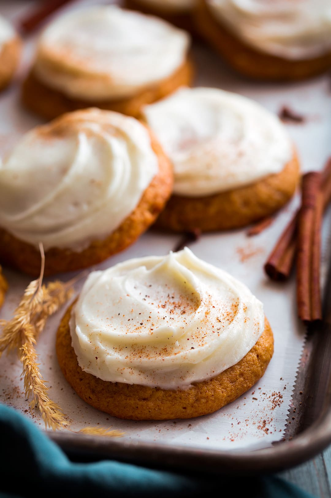

Pumpkin Cookies with Cream Cheese Frosting

After getting this recipe from a friend, I have made them over 100 times for family and friends and they are always a hit, especially around Halloween and Thanksgiving! As far as the spices go, less is more; this is not a full-on pumpkin pie or pumpkin bread/cake. They're light and moist cookies with a taste of fall in every bite!
- 2 cups all-purpose flour
- 1 teaspoon baking powder
- 1 teaspoon ground cinnamon
- ½ teaspoon baking soda
- ½ teaspoon ground nutmeg
- ½ teaspoon ground ginger
- 1 cup butter
- ¾ cup white sugar
- ¾ cup brown sugar
- 2 teaspoons vanilla extract
- 1 egg
- 1 (15 ounce) can pumpkin puree
- 1 (3 ounce) package cream cheese, softened
- ¼ cup butter, softened
- 1 teaspoon vanilla extract
- 2 cups confectioners' sugar
- Preheat oven to 350 degrees F (175 degrees C). Lightly grease baking sheets.
- Whisk flour, baking powder, cinnamon, baking soda, nutmeg, and ginger together in a bowl. Beat 1 cup butter, white sugar, brown sugar, 2 teaspoons vanilla extract, and egg with an electric mixer in a separate large bowl, beating until mixture is smooth. Beat in pumpkin puree. Gradually stir dry ingredients into pumpkin mixture. Batter will be moist.
- Spoon batter by teaspoonfuls about 2 inches apart onto prepared baking sheets.
- Bake in the preheated oven until cookies are lightly browned, 10 to 12 minutes. Let cookies cool for about 5 minutes on sheets before removing to finish cooling on waxed paper.
- Beat cream cheese, 1/4 cup butter, and 1 teaspoon vanilla extract in a bowl with an electric mixer until soft and creamy. Beat in confectioners' sugar, about 1/2 cup at a time, until frosting is smooth and spreadable. Frost cooled cookies with cream cheese frosting.